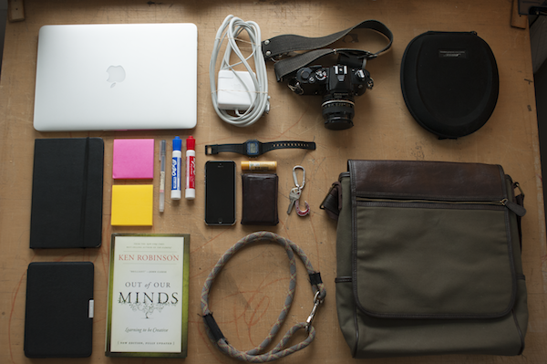

Each morning, as we embark on our daily routine, we stuff our pockets and packs with an assortment of small items. The things we carry — the physical objects that we lug around — impact the relationship that we have with our environment. This idea has been widely acknowledged in regards to the impact that smartphones have had on our daily lives, but I believe that this is not a right exclusive to our phones. It extends to all of life’s accessories. To explore this idea, I unpacked my routine and laid all of my daily belongings out on my desk.
Film Camera: I’ve found that carrying my camera throughout my day has given me a creative boost. It has made every brief excursion about the journey, rather than the destination — whether that be the office, grocery store, or the post office. With my camera on my shoulder, I keep my head up on the constant lookout for a shot.
Dogleash (which comes attached to a dog): It’s amazing how different my commute through Boston is on days when I bring the dog with me versus days that I don’t. On the days that I commute alone, I spend my twenty-minute subway ride browsing my social feeds or reading a book. When my chocolate lab joins me, my commute is filled with conversation with the people next to me. Having a dog by my side makes me approachable, creating a much more interactive relationship with my environment.
Kindle and/or Hardcover Book: I tend to carry both in any given week. The Kindle makes it easier to capitalize on small moments and squeeze a page or two in, but the physical book creates a dynamic similar to that of having a dog. Turning the physical pages of a book with a cover allows the people in my world to spark up a conversation about what I am reading.
Headphones: I used to listen to music during my commute, but I stopped when I realized how much I missed the auditory relationship with my environment. Listening in on passing conversations is people watching for the ears — it adds color and variety to what is otherwise constant about a commute. Not only that, but wearing headphones — whether you are actually listening to music or not — cuts off any potential chance of chatting with your neighboring strangers.
Pen and Post-it Notes: I’ve found post-its to be a great addition to my daily pack. A pad of notes easily slips into my back pocket, allowing for easy access to jot down an idea or a drawing. In his 2008 TED talk, IDEO CEO, Tim Brown, mentions a quick, creative exercise in which you draw your neighbor in 30 seconds. Post-its have enabled me to make this exercise routine, by sketching the individuals next to me on the subway.
$12 Watch: I tend to value practicality over fashion, which makes me the type of person who questions why anyone would ever wear a watch if they also carry a phone. Seems redundant. But the value that I have found in wearing a watch is that it creates one less reason for me to remove my phone from my pocket. We all know that pulling our phone out is the first step towards a cycle of checking various apps and newsfeeds. A watch is a quick hack to cut down on the amount of time that I spend looking at my phone.
Messenger Bag: I used to stuff all of my items into a backpack but have recently switched bag styles. I have found that a messenger bag allows me easier access to my accessories, which encourages me to read, write, or sketch more frequently.
Life is full of small, in-between moments. Making deliberate adjustments to my daily accessories has had an impact on how I spend these moments and the value that they deliver to my life. Take a look at the items you pack into your day, and think about the impact of each of them. Is there anything you would change?